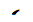
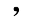
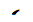
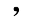

This document lists shapes used to represent characters in the Mongolian script as attested in the page Mongolian Variants, and enables you to jump to the appropriate table in that page.
The classification used is not intended to be etymologically or philosophically pure. It is intended as a practical tool to help locate shapes, and that also works for novices.
How to use the table
Each possible shape is listed in the left-most column. An attempt is made to arrange shapes according to the order of the primitives listed in the filter.
The second column contains an id. No significance should be given to the ordering of these numbers.
The third column shows Unicode code point numbers for characters that list this form in the tables in the Mongolian Variants document. Note that in some cases the shape may be that in a font column or a column that is hidden by default. Click on the code point value to link to the table in the Mongolian Variants page.


 

⊕
Reset


⊕
Reset